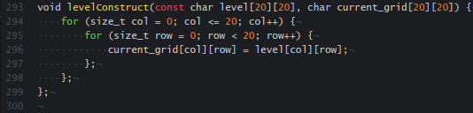

I've been working on several programming projects to develop my knowledge and to prove that I have such. The most notable being a derivative project from the requirements of a text adventure that is a real assignment by Boyd Trollinger at Butte Collage's CSCI programming class. This project is also the only one documented entirely on GitHub.
